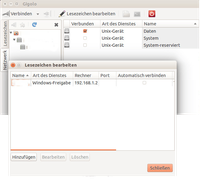

Gigolo
Dieser Artikel wurde für die folgenden Ubuntu-Versionen getestet:
Ubuntu 16.04 Xenial Xerus
Ubuntu 14.04 Trusty Tahr
Zum Verständnis dieses Artikels sind folgende Seiten hilfreich:
Gigolo  ist ein Programm, um (entfernte) Dateisysteme mit GVFS einzubinden. Man kann damit z.B. Windows Freigaben aktivieren und als Lesezeichen speichern. Besonders nützlich ist das Programm, wenn der jeweilige Standard-Dateimanager keine eigenen Funktionen zur Einbindung anbietet.
Unterstützte Dateisysteme:
ist ein Programm, um (entfernte) Dateisysteme mit GVFS einzubinden. Man kann damit z.B. Windows Freigaben aktivieren und als Lesezeichen speichern. Besonders nützlich ist das Programm, wenn der jeweilige Standard-Dateimanager keine eigenen Funktionen zur Einbindung anbietet.
Unterstützte Dateisysteme:
Samba bzw. (Windows) Freigaben
WebDAV (auch via
https://)GNOME Mülleimer (
trash://)Brennprogramme (
burn://)Digitalkameras (
gphoto2://)
Verwendete Passwörter werden im GNOME Schlüsselbund gespeichert. Gigolo ist Teil der Xfce Goodies . Um selbst Freigaben einzurichten, wird die Lektüre der Artikel Samba Server und ggf. auch Samba Server GNOME empfohlen.
Installation¶

Gigolo befindet sich in den offiziellen Paketquellen. Folgendes Paket muss installiert [1] werden:
gigolo (universe)
 mit apturl
mit apturl
Paketliste zum Kopieren:
sudo apt-get install gigolo
sudo aptitude install gigolo
Konfiguration¶
Während GVFS durch Nautilus direkt unterstützt wird, muss man bei anderen Dateimanagern wie älteren Versionen von Thunar (< Version 1.1) oder PCManFM weitere Pakete installieren:
gvfs-backends
gvfs-fuse
fuse-utils
mit apturl
Paketliste zum Kopieren:
sudo apt-get install gvfs-backends gvfs-fuse fuse-utils
sudo aptitude install gvfs-backends gvfs-fuse fuse-utils
und den Benutzer zur Gruppe fuse hinzufügen. Dies geschieht z.B. in einem Terminal [2] mit Root-Rechten [3]:
sudo gpasswd -a $USER fuse newgrp fuse
Benutzung¶
|  |
| Gigolo in Aktion |
Gigolo findet verfügbare Dateisysteme normalerweise automatisch (linke Spalte). Ist keine linke Spalte zu sehen, so muss die Seitenleiste über "Ansicht -> Seitenleiste" aktiviert werden. Mit einem Doppelklick links öffnet sich ein Dialogfenster, in dem man den Verbindungstyp bzw. das Dateisystem und evtl. weitere Parameter wie beispielsweise Benutzernamen und Kennwort eingeben kann.
In der rechten Fensterhälfte werden die eingebundenen Dateisysteme angezeigt. Unter Umständen kann es sinnvoll sein, sich hier über "Ansicht -> detaillierte Liste anzeigen" genauere Informationen auflisten zu lassen. Für häufig genutzte Verbindungen können entsprechende Lesezeichen innerhalb von Gigolo abgelegt werden, die einen erneuten Verbindungsaufbau deutlich erleichtern. Das Aushängen erfolgt über die Auswahl der Verbindung und das Symbol "Trennen" oben links.
Automatisches Einhängen¶
Optional kann Gigolo eingetragene Lesezeichen auch beim Einloggen des Benutzers automatisch einhängen. In vielen Fällen ist dies eine sehr bequeme Alternative zum statischen Mounten von Freigaben über Einträge in /etc/fstab.
Problembehebung¶
gvfs-open¶
Gigolo verwendet den Befehl gvfs-open zum Öffnen des Dateimanagers. Sollte sich damit z.B. Thunar nicht wie gewünscht öffnen, bearbeitet [4] man die Datei ~/.local/share/applications/mimeapps.list und fügt folgende Zeilen an:
[Default Applications] ... x-directory/gnome-default-handler=Thunar.desktop inode/directory=Thunar.desktop x-directory/normal=Thunar.desktop
Diese Vorgehensweise lässt sich prinzipiell auch auf andere Dateimanager übertragen.
Links¶
Heimnetzwerk – Übersicht über die für einfache Netzwerke geeigneten Dienste
gvfs-mount - mehr Informationen zu GVFS
- Erstellt mit Inyoka
-
 2004 – 2017 ubuntuusers.de • Einige Rechte vorbehalten
2004 – 2017 ubuntuusers.de • Einige Rechte vorbehalten
Lizenz • Kontakt • Datenschutz • Impressum • Serverstatus -
Serverhousing gespendet von